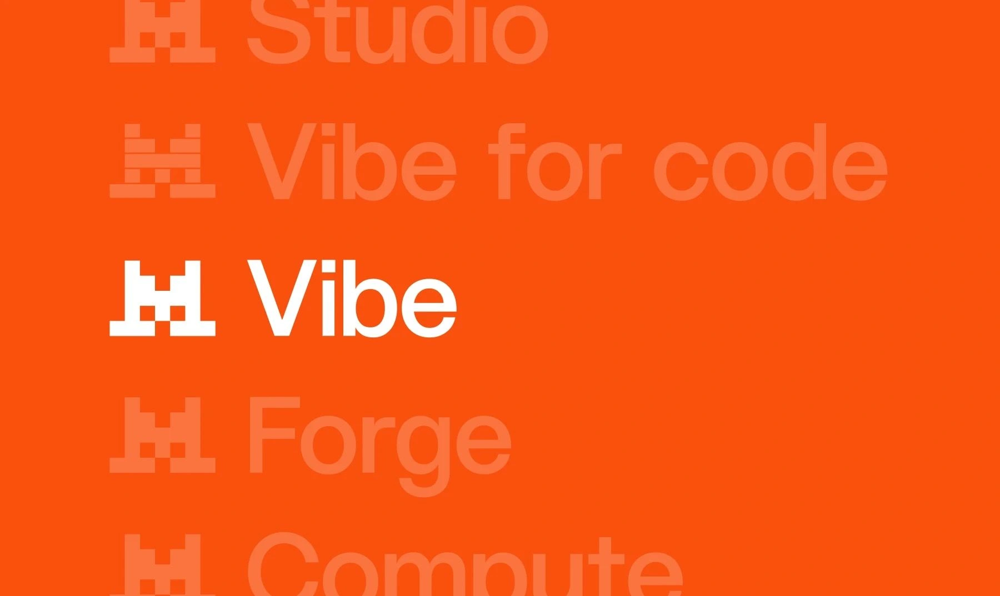

ASSISTANT IA
Le Chat
Un assistant conversationnel pour rechercher, créer et travailler avec l'IA.
Mistral AI développe des solutions d’intelligence artificielle destinées aussi bien au grand public qu’aux entreprises. Ses services permettent notamment de créer du contenu, d’analyser des informations, de programmer et d’intégrer des modèles d’IA dans différentes applications.
De l'assistant conversationnel au traitement des documents et de l'audio, Mistral AI propose différents services basés sur l'intelligence artificielle.

Un assistant conversationnel pour rechercher, créer et travailler avec l'IA.

Des outils pour utiliser les modèles Mistral et créer ses propres applications.

Extraire, rechercher et analyser rapidement les informations de documents.

Comprendre et transcrire des contenus audio grâce à l'intelligence artificielle.